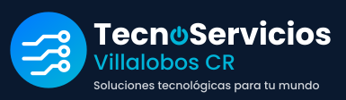

SOLUCIONES TECNOLÓGICAS
TecnoServicios Villalobos CR
Soluciones informáticas, soporte técnico y servicios tecnológicos para personas, emprendedores y empresas en Costa Rica.

SOLUCIONES TECNOLÓGICAS
Soluciones informáticas, soporte técnico y servicios tecnológicos para personas, emprendedores y empresas en Costa Rica.
Soluciones informáticas prácticas, con comunicación clara y atención orientada a cada necesidad.
En TecnoServicios Villalobos CR buscamos facilitar el uso de la tecnología mediante soluciones informáticas prácticas y atención orientada a las necesidades de cada persona o negocio.
Nos enfocamos en necesidades relacionadas con equipos informáticos, conectividad y presencia digital, explicando las alternativas disponibles antes de iniciar cada trabajo.
Soluciones tecnológicas para tus necesidades.
Ayuda para identificar y resolver problemas de computadoras y programas.
Creación de páginas web para presentar negocios, servicios y productos.
Configuración y revisión de la conectividad de equipos y redes.
Orientación para mejorar las prácticas básicas de seguridad digital.
Buscamos ofrecer soluciones tecnológicas prácticas y adaptadas a las necesidades de cada persona o negocio.
Escuchamos tu necesidad antes de recomendar una solución.
Buscamos alternativas claras y adecuadas para cada situación.
Explicamos el problema y las opciones disponibles de forma sencilla.
Trabajamos en soluciones relacionadas con equipos, redes y presencia digital.
Un proceso sencillo para comprender tu necesidad y definir los siguientes pasos.
Nos explicas qué necesitas o qué problema deseas resolver.
Revisamos la información disponible y aclaramos los detalles.
Te explicamos las opciones y, cuando corresponda, el costo estimado.
Definimos el alcance y los siguientes pasos antes de comenzar.
Algunas respuestas para ayudarte a conocer nuestros servicios.
Ofrecemos información sobre soporte técnico, desarrollo web y redes informáticas. Consulta para confirmar si podemos atender tu necesidad específica.
Puedes completar el formulario de contacto y describir el servicio que necesitas para iniciar la consulta.
El costo depende del tipo de servicio y del alcance del trabajo. Es necesario revisar cada solicitud antes de confirmar un precio.
El proyecto está orientado a personas, emprendedores y empresas. La disponibilidad de cada servicio debe confirmarse al consultar.
Por ahora, el formulario valida los datos en el navegador. Para recibir solicitudes de forma real, debe conectarse a un servicio de formularios o a un servidor.
Solicita información sobre nuestros servicios informáticos.